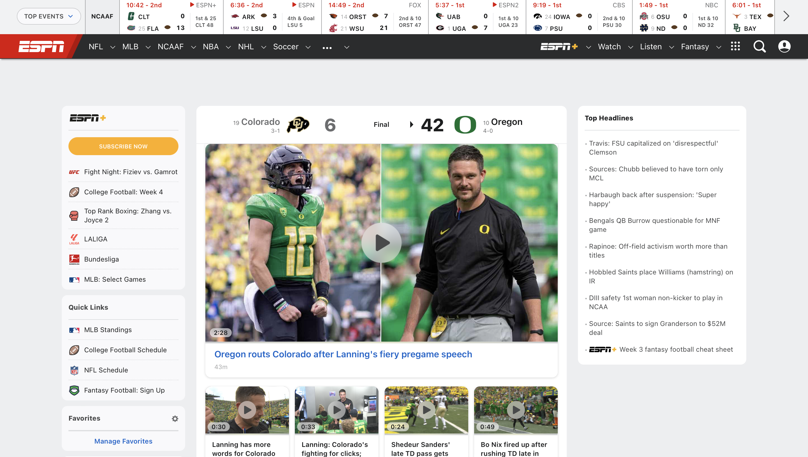
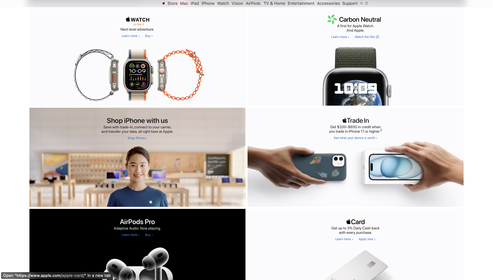

Rule of Thirds
ESPN
ESPN.com ESPN uses the rule of thirds by dividing the page into three distinct columns with a sidebar on either side and the main column in the center. It also uses the scoreboard and navigation links up top, the main video, and the smaller videos beneath it to divide it into thirds horizontally as well.
PARC: Repetition
Apple
Apple.com Apple uses repetition and their website all over the place using colors, fonts, style, etc. One of the most prevalent places I could find repetition was these six cards. Each card has a bold title, a description, links, and an image. Each element matches the elements of the other cards.
White Space and Clean Design
Google.com keeps its webpage clean and simple with a lot of white space, making the search bar and logo stand out. There aren't many extra things to distract you. It is a neat and organized space where the search bar is the only thing to focus on. Everything is designed to help you easily search for what you need.